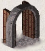

ooms and corridors
in the dungeon are either lit or dark. Any
lit areas within your line of sight will be displayed; dark areas
are only displayed if they are within one space of
you. Walls and corridors remain on the map as you explore them.
Secret corridors are hidden. You can find them with the search
command (choose it from the context menu, or press s).
5.1. Doorways
Doorways connect rooms and corridors. Some doorways have no doors; you can walk right through. Others have doors in them, which may be open, closed, or locked. To open a closed door, left-click it, use the context menu, or press o; to close it again, use the context menu or press c.
You can get through a locked door by using a tool to pick the lock with the a (apply) command, or by kicking it open (use the context menu or press k).
Open doors cannot be entered diagonally; you must approach them straight on, horizontally or vertically. Doorways without doors are not restricted in this fashion.
Doors can be useful for shutting out monsters. Most monsters cannot open doors, although a few don't need to (ex. ghosts can walk through doors).
Secret doors are hidden. You can find them with the search command. Once found they are in all ways equivalent to normal doors.
5.2. Traps
There are traps throughout the dungeon to snare the unwary delver. For example, you may suddenly fall into a pit and be stuck for a few turns trying to climb out. Traps don't appear on your map until you see one triggered by moving onto it, see something fall into it, or you discover it with the s (search) command. Monsters can fall prey to traps, too, which can be a very useful defensive strategy.
There is a special pre-mapped branch of the dungeon based on the classic computer game “Sokoban.” The goal is to push the boulders into the pits or holes. With careful foresight, it is possible to complete all of the levels according to the traditional rules of Sokoban. Some allowances are permitted in case the player gets stuck; however, they will lower your luck.
5.3. Stairs and ladders

In general, each level in the dungeon will have a staircase going up to the previous level and another going down to the next level. There are some exceptions though. For instance, fairly early in the dungeon you will find a level with two down staircases, one continuing into the dungeon and the other branching into an area known as the Gnomish Mines. Those mines eventually hit a dead end, so after exploring them (if you choose to do so), you'll need to climb back up to the main dungeon.
When you climb a set of stairs, or trigger a trap which sends you to another level, the level you're leaving will be deactivated and stored in a file on disk. If you're moving to a previously visited level, it will be loaded from its file on disk and reactivated. If you're moving to a previously unexplored level, it will be created. Most random levels are created from scratch, some special levels are made from a template, and sometimes you'll find the remains of an earlier game (a “bones” level). Monsters are only active on the current level; those on other levels are essentially placed into stasis.
Ordinarily when you climb a set of stairs, you will arrive on the corresponding staircase at your destination. However, pets (see Monsters) and some other monsters will follow along if they're close enough when you travel up or down stairs, and occasionally one of these creatures will displace you during the climb. When that occurs, the pet or other monster will arrive on the staircase and you will end up nearby.
Ladders serve the same purpose as staircases, and the two types of inter-level connections are nearly indistinguishable during game play.
5.4. Shops and shopping
Occasionally you will run across a room with a shopkeeper near the door and many items lying on the floor. You can buy items by picking them up and then using the p command. You can inquire about the price of an item prior to picking it up by using the “#chat” command while standing on it. Using an item prior to paying for it will incur a charge, and the shopkeeper won't allow you to leave the shop until you have paid any debt you owe.
You can sell items to a shopkeeper by dropping them to the floor while inside a shop. You will either be offered an amount of gold and asked whether you're willing to sell, or you'll be told that the shopkeeper isn't interested (generally, your item needs to be compatible with the type of merchandise carried by the shop).
If you drop something in a shop by accident, the shopkeeper will usually claim ownership without offering any compensation. You'll have to buy it back if you want to reclaim it.
Shopkeepers sometimes run out of money. When that happens, you'll be offered credit instead of gold when you try to sell something. Credit can be used to pay for purchases, but it is only good in the shop where it was obtained; other shopkeepers won't honor it. (If you happen to find a "credit card" in the dungeon, don't bother trying to use it in shops; shopkeepers will not accept it.)
The $ command, which reports the amount of gold you are carrying (in inventory, not inside bags or boxes), will also show current shop debt or credit, if any. The ‘Iu’ command lists unpaid items (those which still belong to the shop) if you are carrying any. The ‘Ix’ command shows an inventory-like display of any unpaid items which have been used up, along with other shop fees, if any.
Several aspects of shop behavior might be unexpected.
- The price of a given item can vary due to a variety of factors.
- A shopkeeper treats the spot immediately inside the door as if it were outside the shop.
- While the shopkeeper watches you like a hawk, he will generally ignore any other customers.
- If a shop is "closed for inventory", it will not open of its own accord.
- Shops do not get restocked with new items, regardless of inventory depletion.